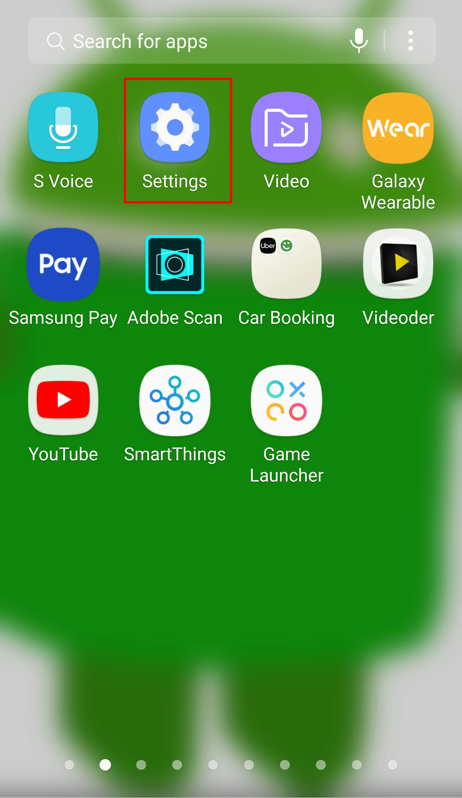
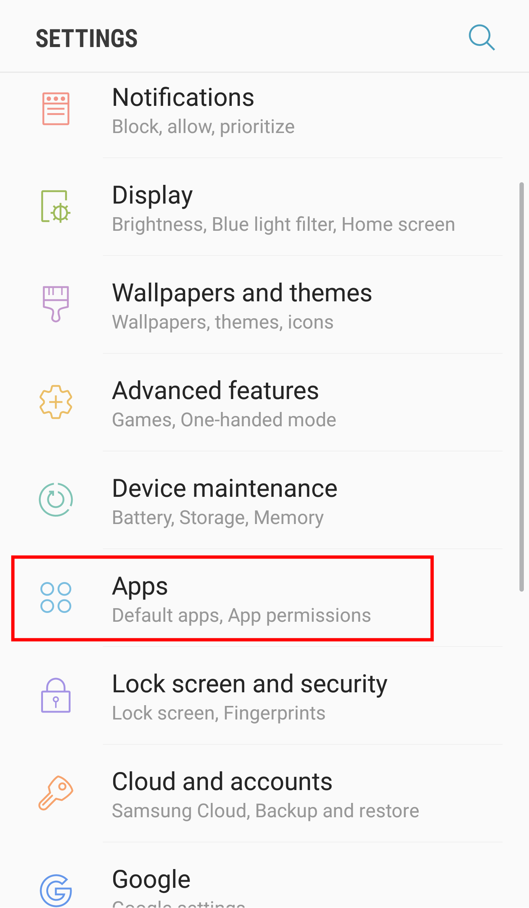
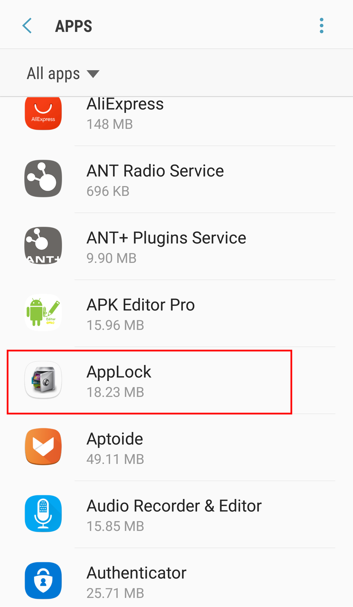
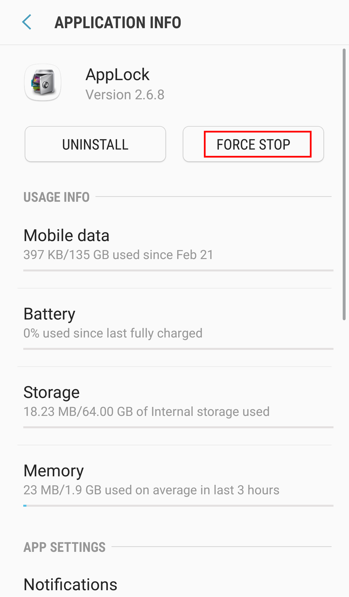
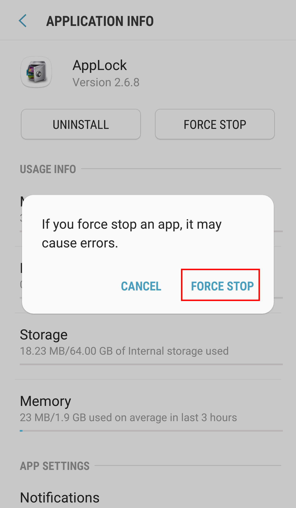
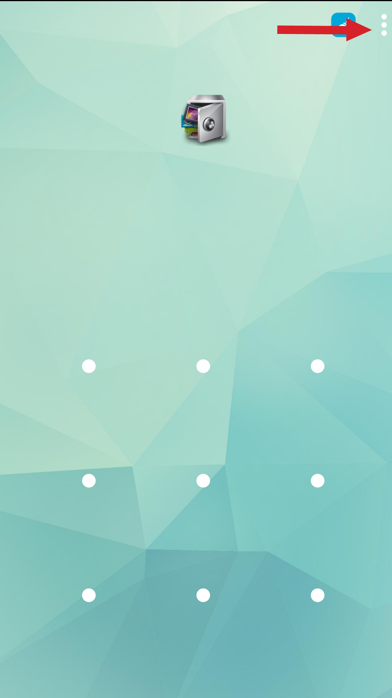
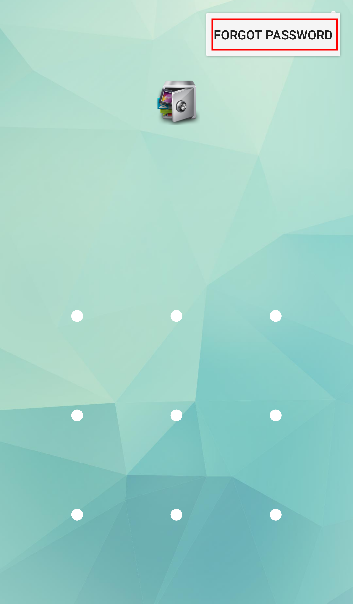
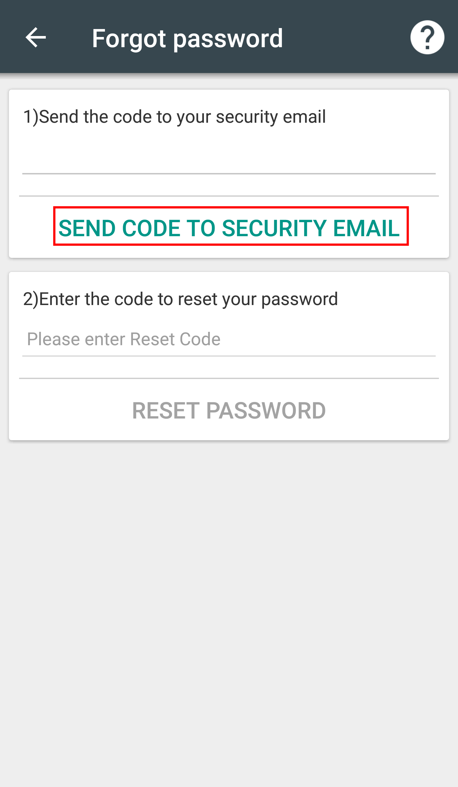

How to Bypass Applock

As we all have privacy and, therefore, we always use an applock to hide our apps, photos and videos. Applications like Applock allow us to lock our Android Apps with password, pattern, pin, and sometimes fingerprint. They are good for security purposes as no one other than us can access our password protected apps, photos, and videos. Some people want to bypass these passwords if they have forgotten them. In this Article, we will discuss how to bypass Applock.
How to Bypass Applock
Applock is a strong app, therefore, bypassing its password isn't that much easy but as you all know that there is a solution to every problem, therefore, this problem also has a solution. There are several ways to bypass Applock.
Uninstall Applock from Android Phone
Uninstalling applock from your Android Phone is an easy way to Bypass Applock but this method only works if the Android Settings are unlocked. If the Android Settings are also locked then you can skip to the last method. If you don't know how to Uninstall Applock then you can see this elaborate guide on how to uninstall apps from Android.
Force Stop Applock From Settings
This is another method to bypass Applock. Here's how to bypass applock by force stopping it:
-
Open Android Menu from your home screen and then open your Android Settings app by tapping on the Gear Icon .
 -
Tap on Apps in the Settings menu. This will open a list of apps in front of you.
 -
Find applock and tap on it.
 -
Now, tap on Force Stop to force stop applock.
 -
This will pop-up a confirmation window in front of you. Tap on Force Stop to confirm.

Bypass Applock with Forgot Password
If Settings are also locked by app lock then you can use this method to bypass app lock.
-
Open Applock app and then tap on menu in the top right corner.
 -
Tap on Forgot Password.
 -
Now, write your email in the 1st box (if you haven't while configuring applock) and then tap on Send Code to Security Email. Go to your Email, check and paste the code in the box below and then tap on Reset Password.
